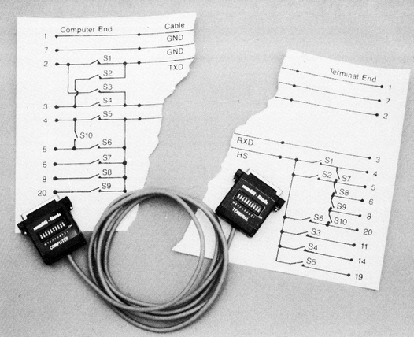
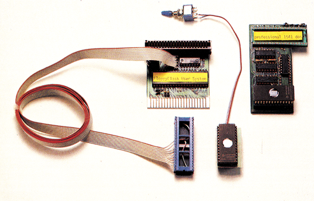
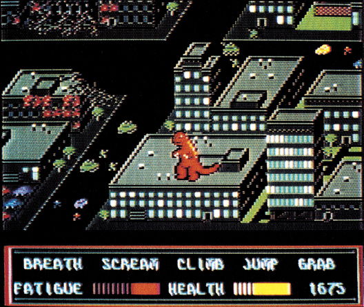
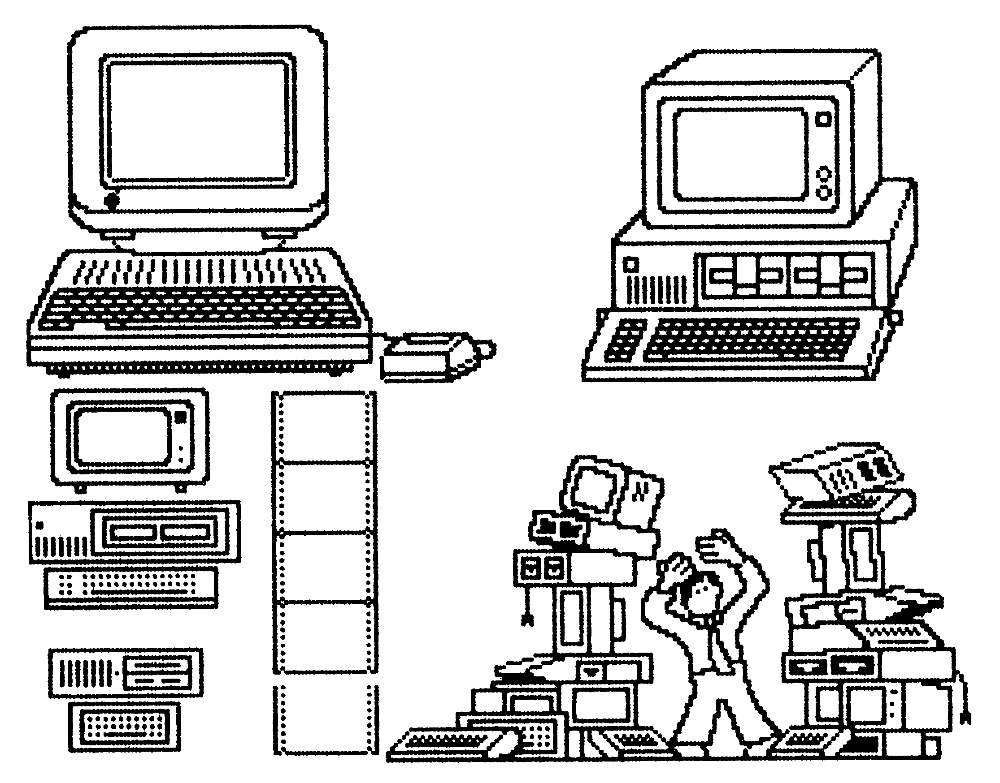

Aktuelles
Programmierbares RS232/V.24-Kabel
Bei der RS232- beziehungsweise V.24-Schnittstelle sind Signale, Stecker und Steckerbelegung eindeutig festgelegt. Trotzdem haben Praktiker mit den Verbindungskabeln einige Schwierigkeiten: Damit die Leitungen parallel durchverdrahtet werden können, sind bei Computer und Datenendgerät die Sende- und Empfangsanschlüsse vertauscht. Sollen aber zwei Computer oder zwei Endgeräte verbunden werden, muß folglich die »Datenkreuzung« in das Kabel verlegt werden. Je nach verwendeten Geräten sind auch unterschiedliche Steueranschlüsse zu verbinden. Dies erhöht die Anzahl der notwendigen Kabeltypen erheblich. Hinzu kommt, daß es aus Kostengründen sinnlos ist, immer Kabel mit 25 Adern zu verwenden, wenn in der Regel nur drei bis fünf Anschlüsse belegt sind.
Lindy bietet jetzt ein programmierbares, fünfadriges Kabel an, mit dem etwa 95 % aller Verbindungsfälle zu lösen sind. Das Überraschende: das Kabel ist kaum teurer als ein vergleichbares Standard-Kabel. Die Grundidee ist recht einfach: In jedem Stecker sind 10 kleine Schiebeschalter eingebaut, die sorgfältig durchdachte Verbindungen ermöglichen. Mit den vielen Schaltvarianten können selbst »exotische« Kabellösungen realisiert werden.
Fest verbunden sind lediglich Schutzerde (Pin 1) und Betriebserde (Pin 7). Sendeleitung TxD und Empfangsleitung RxD (Pin 2 und 3) kann der Anwender parallel durchschalten, vertauschen oder auch auf eine gemeinsame Leitung legen. Die fünfte Verbindung, die normalerweise für ein »Handshake«-Signal verwendet wird, kann beidseitig auf Pin 3,4,5,6, 8 oder 20 gelegt werden und auf der Terminalseite zusätzlich noch auf Pin 11, 14 und 19. Mehrere Schalter sind für Brücken innerhalb der Stecker vorgesehen, beispielsweise für die häufige Verbindung RTS — CTS (Pin 4 und 5).
Das 2 m lange Kabel trägt beidseitig die genormten, 25poligen Sub-D-Stecker. Es eignet sich für beinahe alle RS232/ V.24-Verbindungen bei Computern, Druckern, Plottern, Monitoren, Modems oder anderen Terminals. Es ermöglicht dem Computerbesitzer, mehrere Spezialkabel durch eines zu ersetzen. Vertrieben wird es über den Fachhandel, über Computer-Shops und Fachabteilungen von Kaufhäusern. Preis: etwa 60 Mark

Info: LINDY-Elektronik GmbH, Böckerstr. 21, 6800 Mannheim 1
Erster Farb-Digitizer für C 64
Füle Electronic Trading GmbH bietet den ersten Farb-Digitizer für den C 64 an. Der Digitizer setzt Farbsignale in die 16 Farben des C 64 um. Angeschlossen wird er am User-Port. Das Digitalisieren eines Bildes braucht etwa drei Sekunden. Ein einwandfreies Standbild muß also gegeben sein. Der Anschluß einer VHS-Videokamera oder eines Videorecorders erfolgt über ein BNC-Kabel. Die digitalisierten Bilder werden im Koala-Painter-Format abgelegt, so daß nachträgliche Korrekturen und Verfremdungen möglich sind. Der empfohlene Richtpreis von 448 Mark umfaßt das Digitalisiergerät, eine Diskette mit Betriebsprogrammen und eine deutsch/englische Bedienungsanleitung.
(bj)Info: FET-Füle Electronic Trading GmbH, Postfach 14 25, D-6057 Dietzenbach 1, Tel. 06074/26429
Computercamp
In den Ferien spielend lernen — dem neuen Hobby näherkommen, das verpricht die Computerschule Ernst Haberhauer in Wien. Das Computer-Camp soll die ideale Verbindung zwischen spielendem Lernen am Computer und aktiver Freizeitgestaltung sein. Der Anfänger soll die Funktionsweise und Einsatzmöglichkeiten eines Computers kennenlernen und Kenntnisse der Programmiersprache Basic erlangen, bis hin zur Lösung von Aufgabenstellungen anhand selbsterarbeiteter Beispiele. Der Fortgeschrittene soll seine Basic-Kenntnisse vertiefen können oder in Logo und Pascal eingeführt werden. Gearbeitet wird mit C 64, C 128, Farbmonitor und Drucker. Die erstellten Basic-Programme sollen auch auf andere Computertypen übertragbar sein.
Während des ganzen Camps soll der Sport und Freizeit nicht zu kurz kommen. Die Computerschule Haberhauer veranstaltet die Camps mit dem österreichischen Jugendherbergsverband.
Die Termine sind 28.6 bis 5.6, 5.7 bis 12.7, 12.7. bis 19.7. 19.7. bis 26.7.1986. Als Alter werden 10 bis 16 Jahre angegeben. Die Woche kostet 3400 Schilling. Die Unterbringung erfolgt in der Jugendherberge Sonnrain in St. Martin im Tennengebirge (Vollpension).
Der Kurs erfolgt in Kleingruppen. Die Kursunterlagen sind im Preis inbegriffen.
(hm)Info: Computerschule Haberhauer, A-1220 Wien, Harlacherweg 6/4, Tel. 2 34 49 32
Professional-1541-DOS
Das Professional-1541-DOS von Mikrotronic System ist eine Erweiterung für die Floppy 1541 und einen C 64, beziehungsweise einen C 128 im C 64-Modus, das alle Schreib- und Leseoperationen des Laufwerks um ein Vielfaches beschleunigen soll. Das Professional-DOS ist eine Erweiterung für einen schon vorhandenen Speeder mit Parallelkabel, wie SpeedDos, Speed-Dos Plus, Floppy Flash User System und Floppy Flash Toolkit System. Eine Version für Turbo-Access soll in Entwicklung sein.
Aufgrund einer neuen Arbeitsweise in der Floppy, die zum Beispiel immer den Inhalt einer ganzen Spur vollständig in den Speicher lesen soll, GCR-Bytes hardwaremäßig decodiert und mit einer variablen Prozessor-Taktfrequenz arbeitet, soll das Laden einer Datei bis zu einem Faktor von 50 beschleunigt werden. Der Prozessor arbeitet, nach Herstellerauskunft, mit einem speziellen System, entweder mit 1 oder 2 MHz. Ein Trick soll dafür sorgen, daß keine allzu starke Erhitzung des Bausteins auftritt.
Eine Version des Professional DOS gibt es auch für Betriebssysteme, die Disketten auf 40 Spuren formatieren. Funktionstastenbelegungen der einzelnen Betriebssysteme sollen vollständig erhalten bleiben. Bereits vorhandene Befehlserweiterungen sollen nicht zerstört, sondern lediglich erweitert werden.
Der Preis des Professional-1541-DOS für SpeedDos Plus beträgt für die 35-Spur-Version 169 Mark. Bei einer automatischen Erkennung einer Diskette, die 40 formatierte Spuren enthält, sind 189 Mark für das System zu entrichten, wobei Mikrotronic System bei einer größeren Bestellung auch Rabatte gewährt. Das dürfte zum Beispiel für Clubs interessant sein, die für Ihre Mitglieder eine einheitliche Sammelbestellung aufgeben wollen.
Weiterhin gibt es bei Mikrotronic auch ein Komplettsystem, das den Speeder Floppy Flash beinhaltet. Er kostet als User System Professional 258 Mark und als Toolkit System Professional 288 Mark. (ks)

Info: Mikrotronic System, Dipl. Ing. K. Roreger, Liebigstraße 28, D-4780 Lippstadt, Telefon: 02238/43556
Comic-Grusel mit Movie Monster
Epyx, Produzent zahlreicher erfolgreicher Spiele wie Winter Games, Impossible Mission und Pitstop II, bringt dieser Tage ein neues Programm heraus: »Movie Monster«. Ein grafisch hervorragendes Action- und Strategie-Spiel, bei dem der Spieler ein Monster steuern muß. Die Aufgabe besteht darin, in alter Godzilla-Manier, Großstädte zu vernichten. Städte, wie San Francisco, New York und Tokio stehen zur Auswahl. Ebenso steht eine stattliche Anzahl von Monstern mit den verschiedensten Eigenschaften bereit. Das Spiel soll eine Menge von Variationsmöglichkeiten haben.
(bs)Info: Rushware GmbH, An der Gümpgesbrücke 24, 4044 Kaarst 2

ASSI/M-Assembler in neuer Version
Der professionelle Assembler ASSI/M, der schon in Ausgabe 1/85 der 64'er ein hervorragendes Testergebnis erhielt, ist nun in einer erweiterten und verbesserten Version erhältlich.
Die stärksten Veränderungen hat es beim DEMON (Debugger/Monitor) gegeben, der zu den besten Werkzeugen bei der Fehlersuche in Maschinenprogrammen gehört. Außerdem werden neue Makrobibliotheken mitgeliefert.
Für Besitzer älterer Versionen kostet der Upgrade des alten Assemblers 30 Mark. Neukäufer müssen 220 Mark auf den Tisch legen.
(bs)Info: Dirk Zabel, Stresemannstr. 50, 1000 Berlin61,Tel. 030/2514128
Anti-Hacker-Modem
Die amerikanische Firma Cermetek Microelectronics Corp, bietet mit einem Rückrufmodem den Hackern Paroli. Will sich ein Benutzer in eine Rechenanlage einloggen, muß er erst die Paßwortsperre des Modems überwinden. Werden die Eingaben identifiziert, ruft das Modem den Anrufer zurück und erlaubt erst dann den Zugriff auf den Computer. Die Telefonnummer des Benutzers erkennt das Modem anhand des Paßwortes. Das Modem arbeitet mit einer »Höchstgeschwindigkeit« von 1200 bit/s und kostet 495 US-Dollar. Vor allem bei militärischen und politischen Anwendungen findet dieses Modem in USA seine Abnehmer. Aber auch Geschäftsleute lernen allmählich die Vorzüge eines solchen Sicherheitsmodems kennen. Für den Sommer ist auch ein 2400-bit/s-Typ geplant. Allerdings, so einige Äußerungen von Modemherstellern in USA, wird sich ein 2400-, 4800- oder 9600-bit/s-Standard in Amerika nur schwer durchsetzen, da diese Geschwindigkeiten extrem hohe Ansprüche an das Telefonnetz stellen; selbst wenn die Modems mit automatischer Fehlerkorrektur arbeiten.
(hm)Neue Bilder für den Newsroom
Springboard machte die Ankündigung von der CES wahr: Inzwischen ist die »Clip Art Collection II« für das Do-It-Yourself-Zeitungsprogramm Newsroom erschienen. Über 800 Bilder aus dem Bereich Business sind auf der doppelseitig bespielten Diskette zu finden.
Ein Handbuch gibt, allerdings in englischer Sprache, einige wichtige Tips und Tricks, wie man die Bilder in seinen Zeitungen sinnvoll einsetzen kann. Einziger Nachteil ist der hohe Preis: über 100 Mark.
(bs)Info: Ariolasoft, Postfach 13 50, 4830 Gütersloh

Libyen-Angriff umgesetzt
Die amerikanische Software-Firma Microprose konnte vor einigen Wochen mit einer aufsehenerregenden Meldung sogar Schlagzeilen in der amerikanischen Tagespresse machen: Mit dem Flugsimulations-Programm »F-15 Strike Eagle« läßt sich der Angriff amerikanischer Bomber auf libysche Boden-Ziele am 14. April 1986 simulieren.
1981 gab es schon einmal einen Zwischenfall, bei dem ein Luftkampf zwischen amerikanischen und libyschen Flugzeugen stattfand. Dieses Ereignis wurde damals für den »F-15«-Simulator übernommen und ausgebaut, indem man noch als Option hinzufügte, libysche Bodenziele zu zerstören. Über ein Jahr, nachdem das Programm auf den Markt gekommen war, fand der Angriff der Amerikaner auf Tripolis und andere Ziele statt. Die Programmierer von Microprose waren nun selber sehr überrascht, daß die von ihnen in Gedanken entwickelte Situation der aktuellen in weiten Teilen glich. In »F-15« war praktisch das Vorgehen der Amerikaner vorhergesagt worden. Am Programm mußten also keinerlei Veränderungen vorgenommen werden. Lediglich die Dokumentation wurde aktualisiert. In der Packung findet sich nun ein Beiblatt, das beschreibt, wie man mit »F-15 Strike Eagle« den Libyen-Angriff am Bildschirm nachspielen kann.
Obwohl man hier einmal lobend erwähnen muß, wie schnell eine Software-Firma auf so ein aktuelles Ereignis reagiert hat, darf man doch am guten Geschmack der Amerikaner zweifeln.
(bs)Info: Microprose, 120 Lakefront Drive, Hunt Valley, Maryland 21030
Turbonibbler verbessert
Das beliebte Kopierprogramm »Turbonibbler 3.0« wurde vom Hersteller Eurosystems noch einmal überarbeitet. Die neue Version, »Turbonibbler 4.0«, kopiert jetzt auch sektorweise Speed-Änderungen. Dadurch können mit dem neuen sogar die alten Turbonibbler einwandfrei kopiert werden. Laut Aussage von V. Donkersloot, Geschäftsführer bei Eurosystems, ist mit »Turbonibbler 4.0« die Grenze der seriellen Kopierprogramme erreicht. Eine Version »5.0« wird dann nur noch mit einem Parallel-Kabel funktionieren. Wie bei bisherigen Updates am Turbonibbler hat sich auch diesmal der Preis nicht geändert — »Turbonibbler 4.0« kostet 55 Mark. Besitzer früherer Turbonibbler-Versionen können gegen eine Gebühr von 20 Mark einen Update vornehmen lassen.
(bs)Info: Eurosystems, Verl. Parkweg 6, 6717 gn EDE, Holland, Tel.: 00 31/83 80/3 2146
CMOS-RAM-Platine
Auch Boston Computer bietet eine batteriegepufferte CMOS-RAM-Platine an. Über Jahre hinweg soll die Batterie die RAM-Karte für den C 64 mit Strom versorgen können. Die Platine soll am Expansion-Port des C 64 angeschlossen werden. Sie hat einen Speicherumfang von 32 KByte und wird zum Preis von 198 Mark angeboten. Es wird eine Diskette oder Kassette mit der benötigten Software mitgeliefert. CMOS-RAMs finden eine ständigere Verbreitung unter Heimcomputer-Benutzer. Leicht lassen sich damit beispielsweise EPROM-Programme austesten.
(hm)Info: Boston Computer, Rosenheimer Str. 145a,Tel. 0 89/4910 73-74
Universeller Programmcompressor
Wer auf seinen Disketten Platz schaffen und die Ladezeiten für Programme drastisch verringern möchte, für den ist der neue Compressor V3.0 sicherlich interessant. Der Compressor ist in Menütechnik aufgebaut und soll in der Lage sein, beliebige Basic- oder Maschinenprogramme um bis zu 50 Prozent zu verkürzen. Beim »Packen« eines mit Pet-Speed compilierten Programmes lassen sich nach Angaben des Autors sogar enorme Verkürzungen erreichen.
(aw)Info: Alpha Software, Michael Groß, Graf-Konrad-Straße 8, 8060 Dachau, Tel. 08131/ 82525